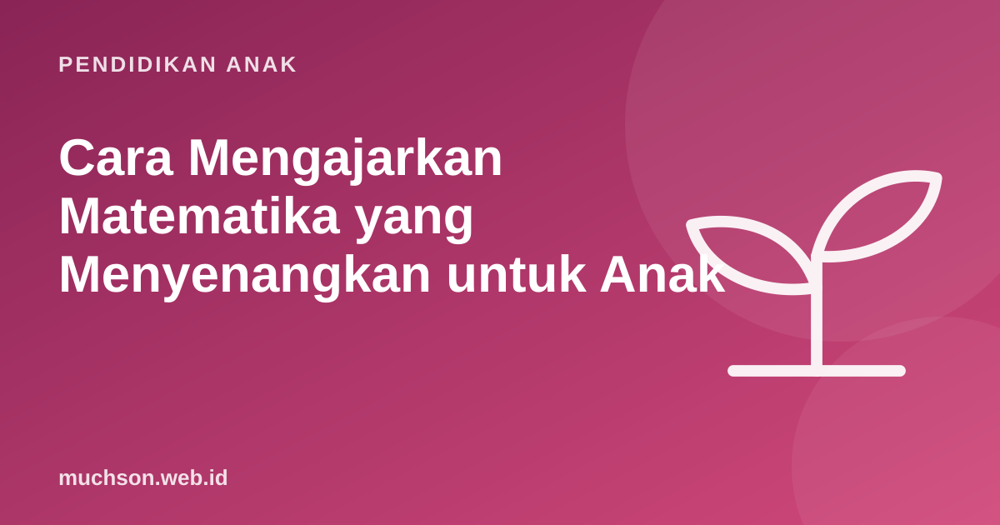

Beranda › Artikel › Pendidikan Anak
Pendidikan AnakCara Mengajarkan Matematika yang Menyenangkan untuk Anak
Banyak anak dan orang dewasa merasa matematika menakutkan. Padahal di usia SD, matematika bisa terasa seperti teka-teki dan permainan. Kuncinya ada pada urutan mengajar yang tepat, banyak bermain dengan angka, dan menjaga agar rasa cemas tidak menular dari orang tua ke anak.

Konteks: kenapa ini penting
Hasil PISA 2022 dari OECD menunjukkan skor matematika siswa Indonesia usia 15 tahun berada jauh di bawah rata-rata negara OECD, dan sebagian besar siswa belum mencapai tingkat kemampuan dasar. Fondasi yang kuat di SD, terutama pemahaman makna bilangan (bukan sekadar hafalan), adalah salah satu kunci memperbaikinya.
Urutan emas: benda, gambar, simbol
Pendekatan konkret-gambar-abstrak (sering disebut CPA: Concrete, Pictorial, Abstract), yang dipakai luas di pengajaran matematika Singapura, mengikuti cara anak memahami konsep baru. Panduan Education Endowment Foundation di Inggris juga menyarankan pemakaian benda manipulatif dan representasi visual untuk membangun pemahaman sebelum simbol.
Kesalahan yang sering terjadi adalah langsung melompat ke simbol. Anak yang menghafal "3 × 4 = 12" tanpa pernah melihat tiga kelompok berisi empat benda akan kesulitan saat bertemu soal cerita atau pembagian.
Matematika di kehidupan sehari-hari
| Kegiatan | Konsep | Pertanyaan yang bisa diajukan |
|---|---|---|
| Belanja di warung | penjumlahan, kembalian | "Kalau bayar Rp20.000, kembaliannya berapa?" |
| Memasak | pecahan, takaran | "Resep untuk 4 orang, kita bertiga. Gulanya berapa?" |
| Memotong kue atau pizza | pecahan | "Mana yang lebih besar, 1/4 atau 1/3 bagian?" |
| Perjalanan | waktu, jarak | "Berangkat 07.15, sampai 07.50. Berapa menit di jalan?" |
| Menabung | perkalian, rencana | "Rp5.000 seminggu, berapa minggu sampai Rp60.000?" |
| Bermain dadu | penjumlahan cepat, peluang | "Angka berapa yang paling sering muncul dari dua dadu?" |
Permainan angka 10 menit
- Tebak angka. Anda memikirkan angka 1-100, anak menebak dengan petunjuk lebih besar atau lebih kecil. Melatih urutan bilangan dan strategi.
- Target 10. Ambil kartu angka acak, cari pasangan yang jumlahnya 10.
- Belanja-belanjaan. Beri label harga pada mainan, anak menjadi kasir.
- Pola tepuk. Tepuk di setiap kelipatan 3: satu, dua, TEPUK, empat, lima, TEPUK.
- Perkiraan. "Menurutmu ada berapa butir beras di sendok ini?" Lalu hitung bersama.
Hati-hati: kecemasan matematika bisa menular
Penelitian Maloney dan rekan (2015) di Psychological Science menemukan bahwa anak dari orang tua yang cemas terhadap matematika belajar lebih sedikit sepanjang tahun ajaran, terutama bila orang tua itu sering membantu PR matematika. Bukan berarti orang tua yang cemas harus menjauh, tetapi cara bicara perlu dijaga.
| Hindari | Ganti dengan |
|---|---|
| "Mama juga dulu tidak bisa matematika." | "Mama juga dulu kesulitan bagian ini. Ayo kita cari caranya bersama." |
| "Matematika memang susah." | "Ini teka-teki. Kita pecahkan pelan-pelan." |
| "Masa begini saja tidak bisa?" | "Coba jelaskan cara berpikirmu. Di mana mulai bingung?" |
| Memberi jawaban langsung | Bertanya: "Apa yang sudah kamu tahu dari soal ini?" |
Saat membantu PR matematika, fokus pada proses berpikir anak, bukan kecepatan. Minta ia menjelaskan caranya. Kalau Anda ragu dengan materinya, katakan dengan jujur dan cari tahu bersama, atau tanyakan ke guru.
Menghafal tetap perlu, tapi setelah paham
Fakta dasar seperti penjumlahan sampai 20 dan perkalian 1-10 memang perlu otomatis supaya pikiran anak bebas untuk soal yang lebih rumit. Urutannya: pahami dulu maknanya dengan benda dan gambar, lalu latih sedikit-sedikit setiap hari. Lima menit sehari lebih efektif daripada satu jam di akhir pekan.
Matematika lewat coding
Coding memberi anak alasan nyata untuk memakai matematika: koordinat untuk memindahkan tokoh, derajat untuk menggambar bentuk (360 ÷ 5 = 72° untuk segi lima), bilangan negatif untuk bergerak ke kiri, dan variabel untuk skor. Seymour Papert, pelopor coding untuk anak, menyebut lingkungan seperti ini sebagai "Mathland", tempat matematika dipelajari seperti bahasa di negeri asalnya. Anak bisa mencoba versi modernnya di pelajaran gratis PixelKode.
Tanya jawab
Bagaimana membuat anak suka matematika?
Apa itu metode konkret, gambar, abstrak?
Apakah anak perlu menghafal perkalian?
Saya tidak percaya diri dengan matematika. Bagaimana membantu anak?
Sumber dan bacaan lanjut
- OECD: PISA 2022 Results, catatan negara Indonesia
- Maloney, E. A. dkk. (2015). Intergenerational effects of parents' math anxiety on children's math achievement and anxiety. Psychological Science
- Education Endowment Foundation: Improving Mathematics in Key Stages 2 and 3
- Papert, S. (1980). Mindstorms (edisi daring)